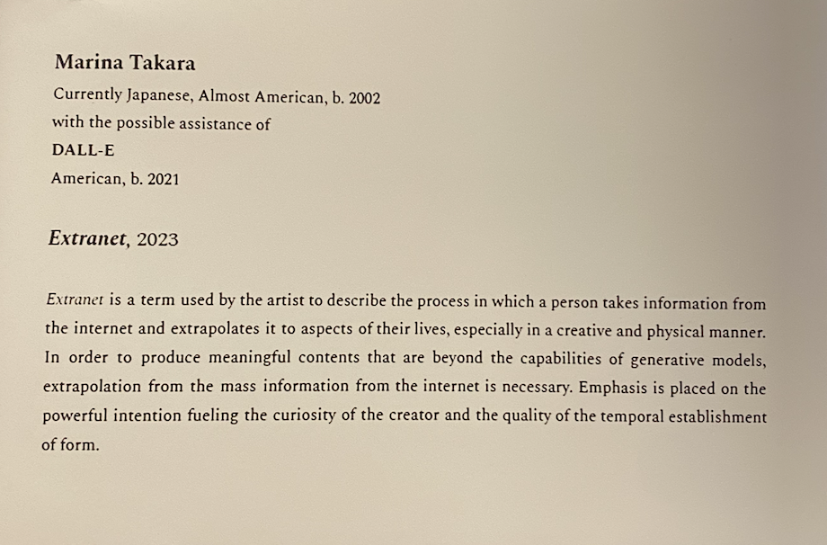
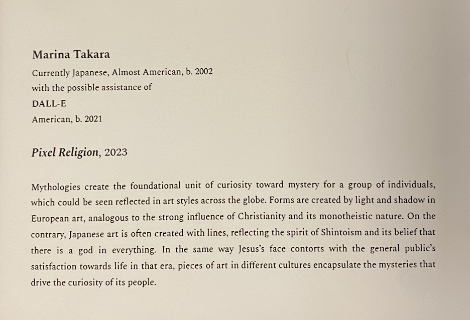
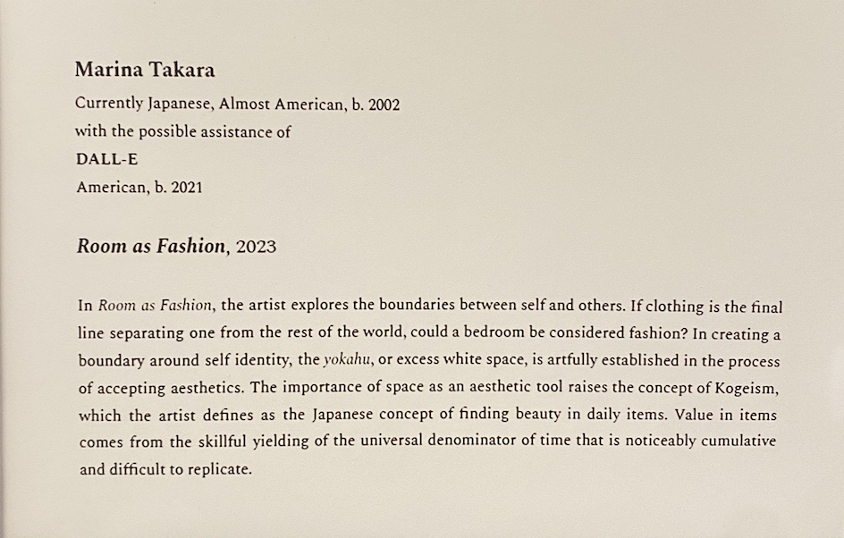
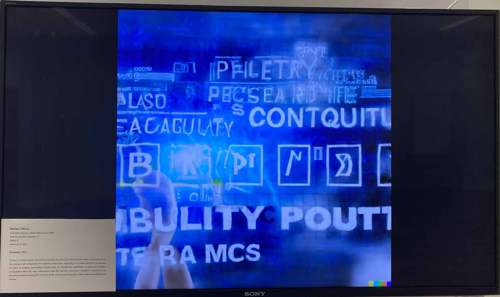
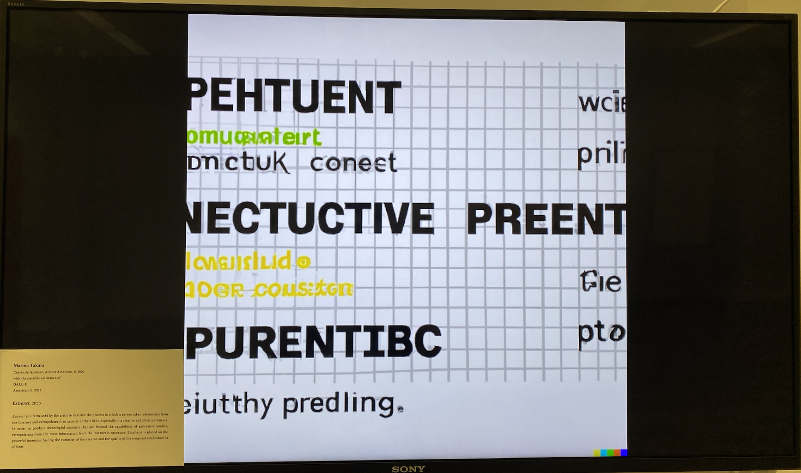
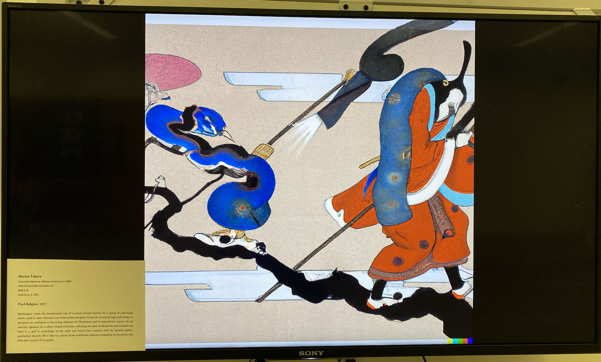
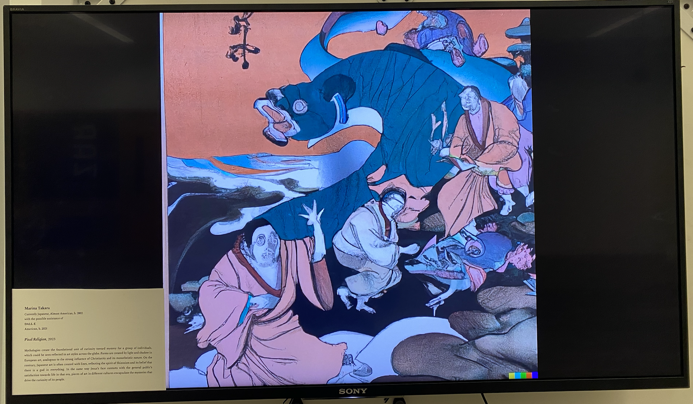
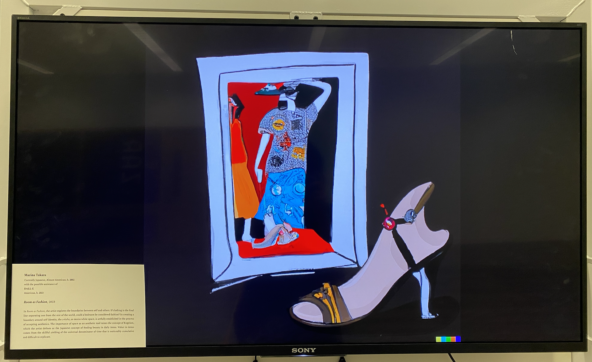
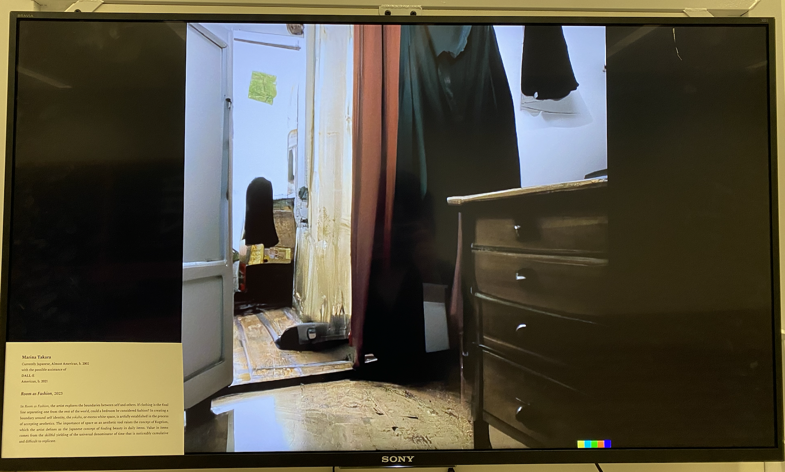

Concept
In this digital age when visuals are so easily created
by generative models, the most important component of
an art piece becomes the concept, not the actual visual
itself. I want my art to be provocative pieces that invoke
conversation rather than being aesthetic pieces that are
valued just for their visual composition.
My piece Concept explores this idea through
three art pieces composed of
a series of changing visuals accompanied by a static
museum-style label that describes my exact concept.
To start, I created three labels that describe the artistic
concepts I wanted to convey in each piece.



Some notable things about these labels:
I am still grappeling with the role of artificial intelligence
in generative art, especially when it plays a large part in
creating visuals. Is it a collaborator, a muse, or just a
tool like Photoshop? In these labels, I opted to list
it as a possible source of assistance in a way that a
human artist's name would be shown on the label.
Another aspect of these labels is my nationality. When looking
at references of museum labels online, they often list the
nationality of the artist, which is valuable in providing
background information on the circumstances surrounding
the artist's process. In this case, I opted to list both
Japan, my birthplace and current citizenship-holding country,
and America, where I grew up and am currently in the process
of getting a citizenship.
Each of these labels were accompanied by a flatscreen TV
showing a video of still images slowly morphing into each
other. With around 40 images for each label, and with the
video looping indefinitely, there was an endless stream of
visuals that could be paired with the label at any given time.
These visuals were created via DALL-E using simple prompts
that related to the concepts, such as "Japanese mythology
in oil painting style." Although I wanted each image to have
the strength to be a vessel for my concept, I was not
particularly picky on the quality of the art, since
the central idea for this project is that the concept, not
the visuals is the core of an art piece.


Examples of visuals for Extranet


Examples of visuals for Pixel Religion


Examples of visuals for Room as Fashion
By having a rotating set of visuals rather than one
piece that accompanies the label, I reinforce the
idea that the intention of the artist is the
backbone of a strong artwork. Although artificial
intelligence is remarkably good at generating
visuals, they lack the fourth dimension of a strong
concept that inserts an inherent human interest
in its form. Although conceptual art often focuses
on minimal visuals, this piece takes the opposite
route, overloading the viewer with generated art
and essentially creating inflation due to the
sheer overabundance. In this way, the label is the
oasis that provides a meaningful start of
conversation regardless of the visual that is flashing
on the screen.